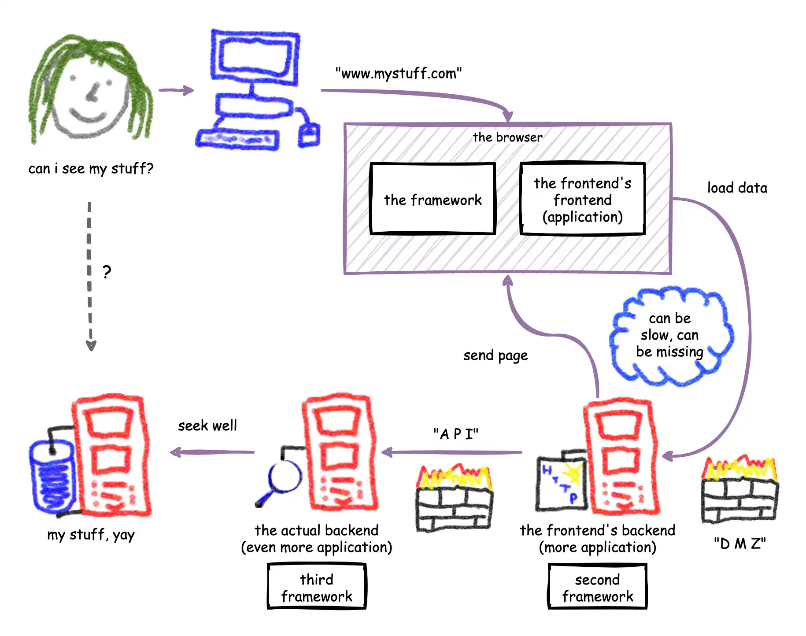
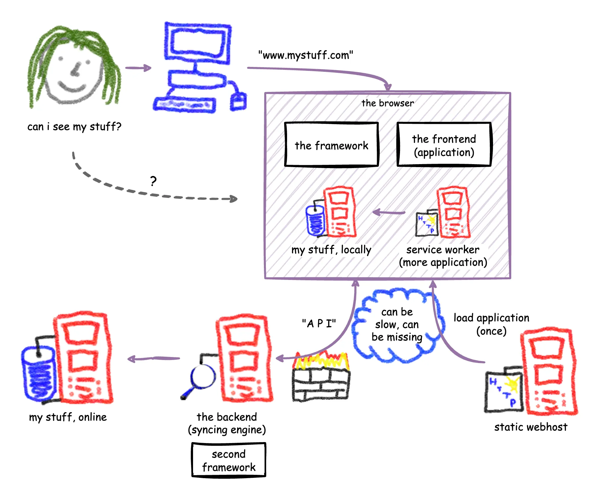
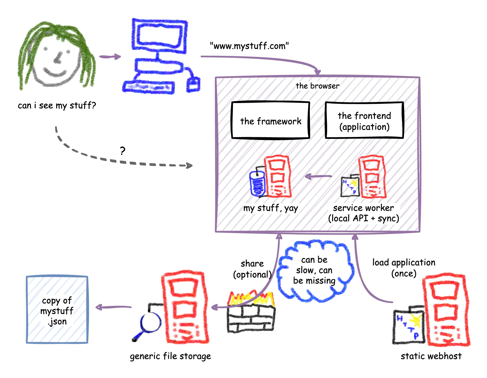

Previously in the history of web application architecture I covered the different ways that people have tried to build web applications, and how all of them came with their own unique set of drawbacks. Also mentioned was how there is one drawback that they all share: there is a whole internet between a user and their data, and this makes it hard to deliver a top notch user experience.
Tail latency matters
On the surface, it doesn't seem like this should be the case. Networks are fast, right? But the truth is, they're only fast for some of the people some of the time.
Look at the page load numbers (LCP) of this website for the last week (gathered anonymously):
- P50: 650 ms
- P75: 1200 ms
- P90: 2148 ms
- P99: 10,636 ms
While half of the visits see page load times well below a second, many see times that are much, much higher. Part of this is due to geography. Going through Azure's P50 roundtrip latency times we can see that some remote connections, like France to Australia, are in the 250 ms range, data center to data center. Azure doesn't disclose P99 latency, but one may assume it is a multiple of the P50 latency.
But our user isn't sitting in a data center, they're probably on a mobile phone, connecting through a slow network. Looking at mozilla's minimum latency numbers we can see that it's not unusual to see another 100 ms of roundtrip latency added by the mobile network, and in reality owing to packet loss and TCP retries it can be a lot more. My own experience taking the train into the office, and trying to get some work done, is that the web can slow to a crawl as I pass through dead zones. This is in a densely populated area in a rich country on the most expensive cell service provider. Most people do not have these same luxuries.
So it's not unusual to see latencies climb far above the threshold of 100 ms, commonly regarded as the threshold for an immediate response. For an unlucky minority of users latencies can even climb above half a second. This matters because if we have to hit the server to do something with the user's data on every click, we will have noticeable and frustrating delay in the interaction. To get a feel of this delay, here's a simulator where you can try out roundtrip latencies from 50 ms to one second:
Can you tell how much nicer 100 ms and below feel? How the buttons actually feel lighter to press? By contrast, 500 ms and above of roundtrip latency are just a slog, painful to use. The buttons are heavy and cumbersome. This is human psychology at work, and these lessons were learned in the desktop era but forgotten and never quite relearned for the web. If we put over 100 ms of latency in between a user's click and the resulting effect they will feel some degree of frustration, and we know that the internet cannot deliver below 100 ms of roundtrip latency except in the luckiest of cases.
Solutions
We can use some kind of closer-to-the-user cache, in the form of a CDN or a browser cache or a service worker. This allows the content that needs to be loaded based on the user's click to be fetched from something that has a better shot at being below that magic 100 ms of latency. But this only works if what we need to load can be cached, and if we can afford to cache it. For a web application that works with user data, this is typically not the case.
We can host the application in a georedundant way, have application servers across the world and use a georedundant database like Google Spanner or Azure Cosmos DB. This quickly gets complicated and expensive, and can only be achieved through a great amount of vendor lock-in. Crucially, it probably does not get us past the 100 ms barrier anyway.
We can render client-side, using JavaScript to create and update the HTML page, so that an update on the screen can happen immediately after the user's click. But this only works if what the user is doing is not updating a piece of server-side data. Otherwise we have to show some kind of loading or saving indicator until the server responds, and then we're back to roundtrip latency.
Bottom line, and once again: the basic problem is that the internet is in between the user and their data. So what if we moved the data to the user?
Local-first
This concept has been around for a while and it is known as a local-first application. To apply it to the web, let's start from the basic design of a client-side rendered web application as covered in the previous article:
This design does not need the server for rendering, so it has the theoretical potential to hit 100 ms. But because the user's interactions have to fetch data from the remote database and update it as well – a database sitting multiple network hops away – in practice we rarely actually hit that low latency. We can move the data to the user by doing something like this:
The user's data gets duplicated into a local IndexedDB. More than duplicated actually as this becomes the only copy of the data that the user will interact with directly. The backend-for-frontend and API that used to gatekeep access to this data similarly get moved into the client, as part of a service worker. This worker code can be very similar to what the server-side version would be, it can even reuse express (although it probably shouldn't). Because the service worker's API for all intents and purposes looks like a server-side API to the frontend codebase, that frontend can be built in all the usual ways, except now with the guarantee that every server roundtrip completes in milliseconds.
To avoid slow page loads each time the web application is opened it also needs to be cached locally as part of the service worker. By packaging this as a progressive web app installs become possible onto the user's home screen, giving an experience not that unlike installing a native mobile app. The application server's job is now reduced to only providing that initial application install, and it can become a simple (and free) static web host.
Here comes trouble
Both the application and the data are now running locally, meaning the user doesn't need the network at all to get things done. This isn't just local-first, it is offline-first. But like all things in software architecture, we are trading one set of problems for another.
There still needs to be a way to get data onto other devices, or to other users, or simply backed up into the cloud. That means the service worker also gets the job of (asynchronously) uploading changes to a server API which will store it in a database, as well as pulling server-side changes back down. The server-side version acts as the master copy, and the server-side API gets the thankless job of merging client-side changes with it.
Not so fast though. Our user might be editing offline for a considerably long time, and the data on the server may have been changed in the meanwhile from another device or by another user. The job of merging those changes can be ... complicated. A good strategy is needed for merging. A possible path is to use CRDT algorithms from a library like automerge, as suggested by the local-first article linked above. However, for many cases a simpler bespoke algorithm that is aware of the specific data types being merged probably works well enough, as I discovered when making an offline-capable work orders web application that used this strategy.
As the local-first application is now directly talking to this API, it needs a way to authenticate. This can be a reason to still have a minimal backend-for-frontend on the server. An alternative is to use a separate OpenID Connect identity provider with a PKCE authorization flow to obtain an access token. PKCE is an authorization flow developed for use by mobile apps but also usable by web apps that enables secretless API authentication.
Another major caveat is that the entire codebase needs to be on the client, which necessitates keeping it under a tight performance and size budget. Careful curation of dependencies is key, and a javascript footprint that runs in the megabytes is verboten. Vanilla web development can be a solution here, with its emphasis on using the platform to its limits without bringing in dependencies. A lightweight framework like Lit or Preact will do as well.
This isn't just a theoretical exercise. The team at Superhuman built their better gmail than gmail more or less as described here, using React as the framework, and the thing that sets their web app apart is its blistering speed. You can go read how they did it on their blog (part 1, part 2) or listen to the retelling on the Syntax podcast.
Loco-first
But we can push it even further, in theory at least. In the previous iteration of the architecture we still have the application-specific database and syncing logic on the server, but what if we instead did away with every last piece of server-side application logic?
The syncing engine now gets moved in the client, and what it uploads to the server are just files. That means all we need is a generic cloud drive, like Dropbox or Onedrive. These cloud drive services often support cross-origin API access with OpenID Connect authentication using PKCE. That means the service worker in the client doesn't need any application servers to upload its data to the cloud storage.
The onboarding experience becomes a choice screen where the user picks their cloud drive option. The application will redirect the user to the Dropbox or Onedrive or <insert vendor here> login page, and obtains an access token using PKCE authorization flow that is persisted locally. This token is used to connect to the user's cloud drive from inside the service worker. The application will bootstrap itself from whatever files are already in the drive, and will regularly synchronize with the current contents of the drive using its service worker logic.
Instead of a cloud drive, another option is the use of the File System Access API to get a handle to a local folder. The user can set up this folder as cloud-synced, or they can back it up and copy it to other devices using a method of their choice. This solution allows the app to have complete privacy, as the user's data never leaves their device or network. The caveat is incomplete browser support. Come on Safari and Firefox, do your bit, for privacy!
In a single user scenario, each of their devices uploads its own copy of the data, either as a history of actions or as the latest state. When a device's service worker wants to sync, it checks all of the files of the other devices to see if they have been modified. If they are, it downloads updates and merges them into the local IndexedDB. This is the same work as the previous architecture iteration did in its server-side syncing API, only now in reverse: instead of every device going to the server and presenting its copy to merge, it is the service worker going to each device's copy and checking if it needs merging.
There is no longer a master copy of the data, only one copy per device, all on equal footing, with an eventual consistency arising out of the devices merging from each other's copies. This is the same philosophy as CRDTs, or of the Operational Transformation algorithm that underpins Google Docs. No matter though, when you get deep enough into consistency models (I recommend Aphyr's writings or Martin Kleppmann's book), you'll realize that there is never such as a thing as a reliable master copy in a distributed system, even in cases where there is a central database.
A multi-user scenario can be realized by our user subscribing to someone else's shared cloud drive folder, where the other user shares their copy of the data as read-only. When Alice shares her folder with Bob, Bob shares his with Alice, and they both subscribe to each other's updates, then they can work on a shared document without ever having given each other direct write access.
As this application has no servers outside of the lightly loaded static web host, which in 2025 is free to host even at scale, the hosting cost drops to zero almost regardless of the number of users. The cloud drive costs are carried by each user individually, only responsible for their own share of storage. The only hosting cost to the application's owner would be the domain name. The climate footprint is minimal.
By eliminating the central database and its adjoining server-side logic it also eliminates the main target for hackers. Because compromises can only occur one user at a time they lack a sufficient reward for hacking the application. On top of that, the only servers are the static web host and the major cloud drive vendors, both practically impossible to hack. This web app would be highly secure and remain secure with barely any maintenance.
This architecture would be a cloud vendor's worst nightmare if it ever became popular, as they cannot earn a dime from it (aside from the basic cloud drive pennies). Thankfully for them, it is impossible to monetize for the company that builds such a web app as well. No server == no revenue opportunity. For now this is just a crazy theoretical exercise, far removed from where the leading frontend architecture voices are driving us, but the possibility fascinates me.